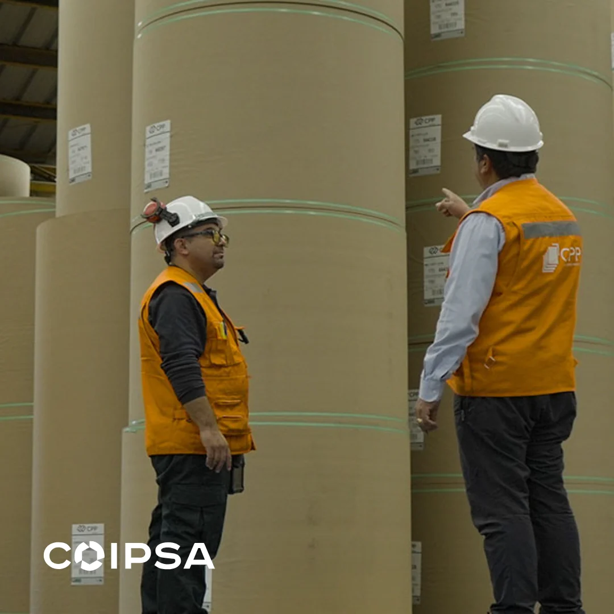
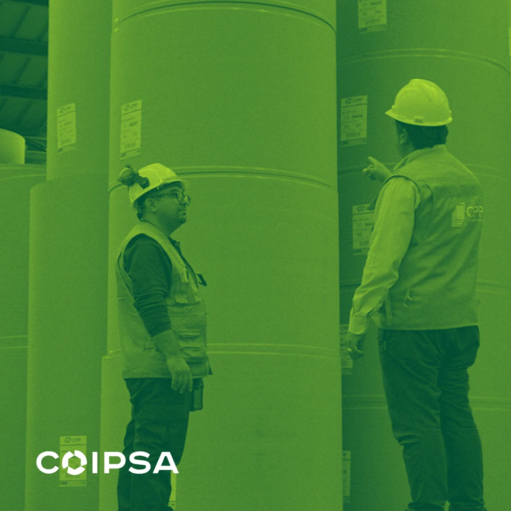
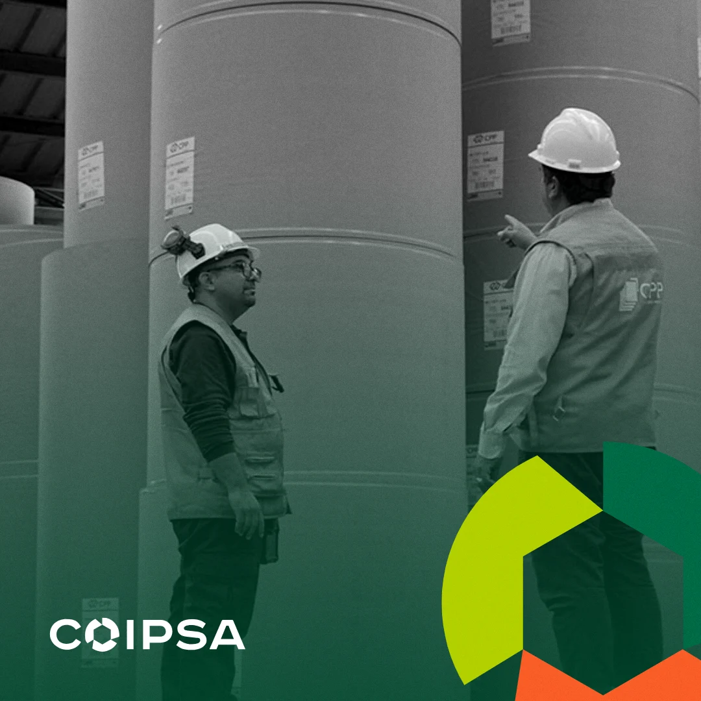

Escuchar
Entrevistas, revisión de lo que hay y medición de cómo están hoy las redes y el sitio.
Ver meses 1 a 3Un año en cuatro trimestres. Redes, materiales y herramientas avanzan desde el primer mes.
Entrevistas, revisión de lo que hay y medición de cómo están hoy las redes y el sitio.
Ver meses 1 a 3Estrategia, pilares de contenido, metas y decisiones de marca pendientes.
Manual de marca, recursos gráficos y herramientas.
Todo en uso. Reporte anual comparado con la medición inicial.
Al cierre del mes 3 se fijan las metas del año.
| Tarea | Mes 1 | Mes 2 | Mes 3 |
|---|---|---|---|
| Escuchar y medir | |||
| Reunión de inicio: accesos y calendario de sesiones: semana 1 | |||
| Entrevistas a las áreas involucradas en la comunicación: semanas 2 a 4 | |||
| Revisión de sitios, redes y materiales actuales: semanas 2 a 4 | |||
| Medición inicial de LinkedIn y del sitio: semanas 2 a 3 | |||
| Marca | |||
| Logos, colores y tipografía unificados en archivos de trabajo: semanas 1 a 3 | |||
| Plantillas para LinkedIn e Instagram: semanas 3 a 5 | |||
| Redes | |||
| Apertura de la cuenta de Instagram: semanas 3 a 4 | |||
| Pilares de contenido y calendario del trimestre: semanas 3 a 4 | |||
| Dos publicaciones a la semana en LinkedIn e Instagram: semanas 4 a 12 | |||
| Planes «Marca, redes y herramientas» y «Completo» | |||
| Inventario de presentación, brochure y fichas: semanas 4 a 5 | |||
| Nueva presentación corporativa: semanas 6 a 10 | |||
| Registro de cómo se piden y producen las piezas hoy: semanas 3 a 8 | |||
| Propuesta de la primera herramienta: semanas 9 a 12 | |||
| Plan «Completo» | |||
| Temas del medio propio, a partir de las preguntas de clientes: semanas 6 a 8 | |||
| Línea editorial y diseño del sitio de contenidos: semanas 9 a 12 | |||
| Seguimiento | |||
| Sesión mensual con reporte: semanas 4, 8 y 12 | |||
| Metas del año, a partir de la medición inicial: semana 12 | |||
Se ajusta en el segundo trimestre.
Coipsa firma. Recupac, CPP y Corrupac aparecen como unidades, no como cuentas aparte.
LinkedIn: opinión con datos, para clientes e industria. Instagram: personas, plantas y procesos.
Contenido práctico: Ley REP, qué se recicla, cómo elegir un embalaje.
Coipsa recupera, transforma y fabrica. Contado como un solo ciclo, cada unidad respalda a las otras.
Graneros, la planta de Quilicura y la nueva máquina papelera de Mostazal.
Las empresas necesitan saber qué hacer con sus residuos y envases. Coipsa puede explicarlo.
Material propio para mostrar el trabajo y atraer talento.
Las columnas en LinkedIn ya tienen un tono claro y con opinión. Se puede extender al resto.
Armada con lo que Coipsa publica en sus sitios. Es el punto de partida del manual.
Coipsa firma todo. Las unidades se nombran con el color de su pieza del símbolo.
Siete colores, un valor cada uno. Pulsar el HEX lo copia. La franja muestra la proporción de uso.
Poppins para todo, en tres pesos. Titulares con mayúscula inicial.
Del residuo a la caja, en cuatro pasos
Negra para titulares, seminegra para bajadas, regular para texto.
Personas en su trabajo, material de cerca, plantas desde el aire. Tres tratamientos, según la pieza.



Experiencia en el oficio y claridad en la explicación, sin jerga.
Habla alguien con años en el oficio: claro y directo. Responde lo que la gente pregunta, no exagera y se permite algo de humor.
La voz es una; cambia según el canal.
Opinión con datos, para clientes, industria y autoridades.
El trabajo por dentro: personas, máquinas y procesos.
Lo que gana el cliente, en cifras.
Conversacional, cercano y con humor. Lo técnico, contado de forma que den ganas de leerlo.
Propuesta de partida, sin aprobación de Coipsa.